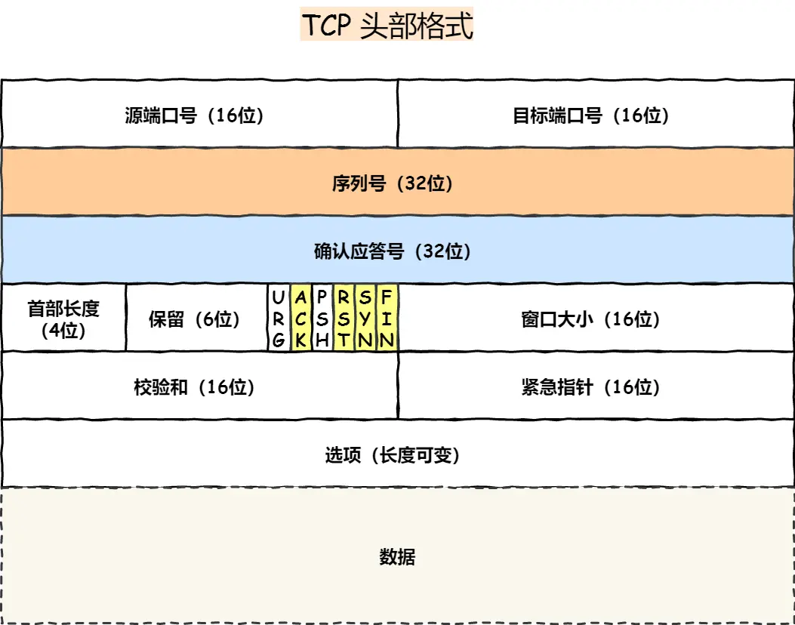
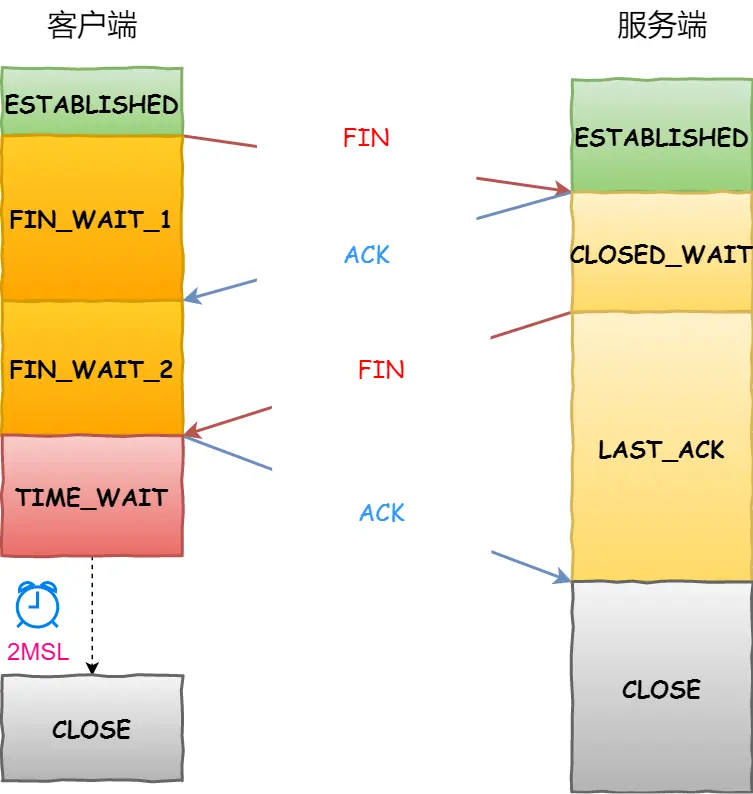
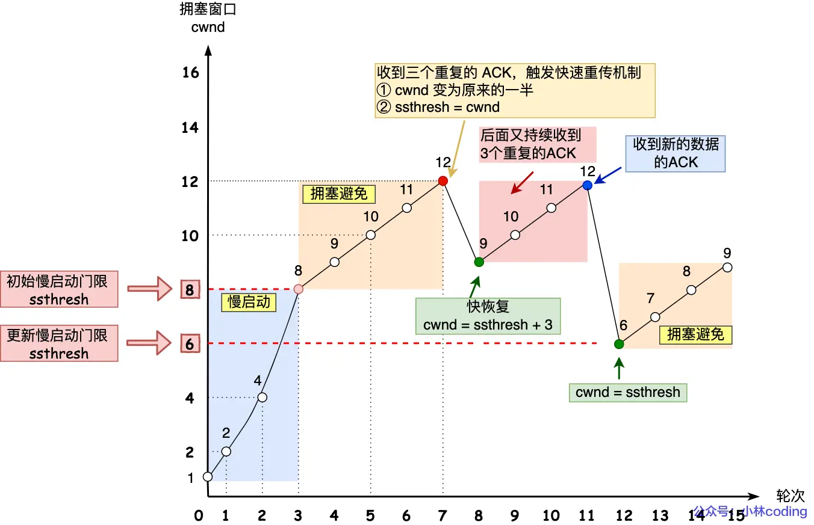
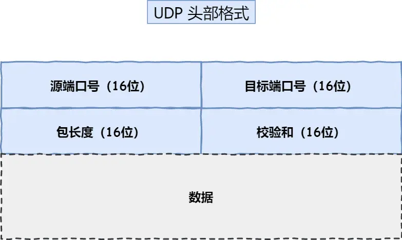

聊聊传输控制协议(TCP, Transmission Control Protocol)。
简述
TCP 位于传输层，是面向连接且基于字节流的可靠协议。
所谓面向连接，就是指如果使用 TCP 协议进行数据传输，那么必须在数据传输之前进行“一对一连接”，确认双方都能发送/接收数据后，才正式开始互发数据（全双工）。
所谓基于字节流，就是指 TCP 层不关心有效负载的内容，只是将其视为若干字节。发送数据时直接从 buffer 中取出若干字节，用 Header 包装后发给下层；收到数据时，取走 Header 直接交付给应用层。这也容易导致多份不同的应用层数据同时位于一个 TCP 报文段中，存在粘包问题。
所谓可靠，就是指 TCP 用重传机制保证数据尽可能全部到达，滑动窗口保证数据尽可能有序接收，拥塞控制保证网络尽可能不会同时收到过多报文而导致数据丢弃。
TCP Header

TCP 能够提供上述服务，其首部中最关键的字段就是序列号和确认应答号，以及控制位。
序列号：首次尝试建立连接(SYN:1)时会获取一个随机值作为初始序列号，随后每次数据发送，都会将当前序列号加上该次数据的字节数作为下一个报文的序列号；
即使丢包重传也不会重置该值，以便服务端意识到这是一个重传
确认应答号：收到数据后，告知发送端的下一个希望收到的序列号。一旦收到确认应答号有效(ACK:1)的报文，就可以认为之前所有数据都已被正确接收；
ACK：为 1 时，确认应答号字段有效；
RST：为 1 时，表明发生了预期之外的错误，需要强制终止连接；
SYN：为 1 时，表明发送方请求建立连接，同时也用于同步初始序列号；
FIN：为 1 时，表明发送方已无数据要发，请求正常终止连接；
面向连接
TCP 建立连接——三次握手
今天小明给小红打电话，小明拨打后第一句话就是：“喂喂喂，能听得到我吗？”小红听到后也回复：“嗯嗯可以听到，你能听到我说话吗？”小明听到后意识到小红能听到他说话，那么他只需要告诉小红“可以的。既然我们都能听到对方讲话，那我就开始跟你聊天了！”即可。
这也表明只有两边都确认了双方能进行正常通话后，才能进行下去。否则，如果小明说话小红听不到（意味着小红没法做出回复），或小红说话小明听不到（小明不能确定小红是否能听见），又或是各自都听不到对方的声音，那么这次通话就是糟糕的，需要挂掉重新拨打。
根据上面的情景，就可以大致揣摩发明三次握手的前辈的思路了。TCP 建立连接也是需要三次报文同步，如果是 client 主动向 server 发起连接请求，那么一个正常的 TCP 连接建立应该是下面这样的：
- 第一次握手：client 发送 {Seq:a, SYN:1} 报文段。表明尝试建立连接，且本次连接生成的随机初始序列号为 a；
- 第二次握手：server 收到后，意识到有人尝试和自己建立连接，如果条件允许，就会发送一个 {Seq:b, Ack:a+1, SYN:1, ACK:1}。表明同意建立连接，且本次连接生成的初始序列号为 b；
- 第三次握手：client 看到 server 的回复，意识到自己和 server 之间能正确进行数据交互，但是 server 不确定自己的数据能否被 client 收到。为了让 server 安心，client 回复一个 {Seq:a+1, Ack:b+1, ACK:1} 的报文段，作为对之前报文的回复，server 收到后，也能确立双方连接已建立；

每次建立新的 TCP 连接时，初始序列号为什么要不一样？
如果每次初始序列号是一样的，那么无法区分收到的报文是这次连接发来的还是之前的连接发来的。
TCP 仅通过 双方 IP 地址和端口 唯一标识一个 TCP 连接，而序列号仅仅是一个 64 位无符号整数，一旦到上限就归零重新计数。这也就意味着无法根据序列号来辨识。
如果说上面这个原因可以通过四次挥手的 TIME WAIT 阶段解决，那么还有一个原因，就是如果每次序列号都是一样的，黑客就可以很轻易地伪造一个报文让 server 接收，从而进行攻击。
为什么是三次而不是两次？四次？
为了让双方确保各自均有发送和接收数据的能力。这个答案不错，但并不完整。使用三次握手而不是两次的关键原因在于，三次握手可以消除历史连接的影响。
在真实网络中，丢包和超时是必须要考虑的两个异常状况。它们都会因为网络拥堵引起。其中超时报文可能会在遥远的未来到达，如果连接双方在这个报文起已经往前推进了，那么这个报文就是“历史”的。
🎨考虑这样一种情况：某 client 因为宕机导致前后发送了两个不同初始序列号的连接请求，并且因为网络拥塞等因素，client 在发送第二个连接请求后，收到了第一个连接请求的回复，client 发现该回复中的 Ack 字段与新生成的初始序列号不匹配，就回复一个 {RST:1} 强制终止这次连接。
如果两次握手即可建立连接，server 会在收到 client 的第一个连接请求后进行资源分配，进入 ESTABLISHED 状态，之后又被强制终止，然后又收到 client 的第二个连接请求后再次进行资源分配，进入 ESTABLISHED 状态。如果 client 没有宕机呢？也可能会因为超时重传和第一个连接请求同样的报文段，server 重复收到多个连接请求，也就会多次进行资源分配与连接建立。
这里仅仅是一个 client 的一次宕机/超时就导致 server 额外进行了不必要的连接建立，真实场景下一个 server 可能会收到海量 client 的连接，即使只有其中一小部分出现这种异常情况，那也会增加 server 不必要的资源浪费——而这只需要额外的一次握手即可解决。
而四次握手则是没有必要。就像最开始提到的电话问题，“你能听到吗？”和“可以。”分别对应了 连接请求 和 回复。小红只不过把连接请求和回复放在同一句话中，也就是将四次握手里的第二次和第三次合并，就成为了三次握手。
什么是 SYN 洪泛攻击
Linux 内核会为三次握手维护两个队列：
- 半连接队列：存放收到连接请求但未完成三次握手的 client 信息（SYN RCVD）；
- 全连接队列：存放已完成三次握手的 client 信息（ESATABLISHED）；
攻击者可以伪造不同 IP/端口向 server 发送 {SYN:1}，但是又不进行第三次握手，那么 server 就会有大量的 SYN RCVD 状态，半连接队列也会被逐渐占满（是的，并不是没有上限的），新的用户连接请求到达后，会因为队列满而被丢弃，那就没法提供正常的 TCP 服务了。
TCP 断开连接——四次挥手
根据三次握手，我们也不难理解四次挥手的整个过程。
- 第一次挥手：client 已经发完所有数据，决定断开连接，于是发送 {FIN:1}，进入 FIN WAIT 1 状态；
- 第二次挥手：server 收到该断开连接请求，但是可能自己还有数据没发完，就先用 {ACK:1} 同意 client 的请求，等到自己数据发完了再主动断开，这就进入了 CLOSE WAIT 状态。client 收到后，意识到 C->S 这个方向的连接已经断开，进入 FIN WAIT 2 状态；
- 第三次挥手：server 也发完数据了，决定断开连接，于是发送 {FIN:1}，等待 client 最后的回复，进入 LAST ACK 状态；
- 第四次挥手：client 收到该断开连接请求并用 {ACK:1} 同意，进入 TIME WAIT 等待 2MSL 后彻底断开连接，server 收到这条回复后，也彻底断开连接；

当然四次握手也不一定非得是四次，之所以是四次是因为 server 在收到 client 的断开连接请求时，可能还有数据要发送。如果没有数据要发送的话，二三次挥手可以合并到一起，此时跳过了 client 的 FIN WAIT 2 状态。
为什么 TIME WAIT 要等 2MSL
首先要知道 MSL(Maximum Segment Lifetime, 最大报文生存时间)是一个时间值，在网络上滞留时间超过这个值的报文将被丢弃，一般而言是 30s。而 2MSL 足以让本次连接中因为网络阻塞而滞留的报文全部消亡。即使极端情况下，从 client 发出到 server 接收，server 又作出回复，一来一回也最多需要两倍的时间，在这个时间段里所有收到的报文均会被 client 丢弃，剩下没收到的也会因为 IP 层的 TTL 归零而被路由器丢弃（MSL 必须大于 TTL 归零的时间）。
前面提到，历史的连接可能会对未来的连接造成影响，如果下一次连接中某个报文使用了和本次连接某个报文相同的序列号，且 client 没有等待历史报文销毁就创建新的连接，server 可能会收到历史报文，并且认为是本次连接中 client 发出的，那不就发生错误了么？
因为初始序列号是随机的，加上序列号超过上限会从零开始继续增加，所以前后两次连接出现相同序列号的报文是完全有可能的。
除此之外，如果第四次挥手时 client 的回复超时未抵达或丢失，那么 server 会重传断开连接请求，client 收到后会重发 {ACK:1}，并且重置 TIME WAIT 计时器。2MSL 足以确保在只发生一次丢失的情况下还能正确完成四次挥手过程。你问如果 client 的回复和 server 的重传一直丢失呢？概率太小了，为此增大等待时长，跟为了研究生补助去读研有什么区别（bushi。
服务端为什么会出现 TIME WAIT 状态？该怎么解决？
要明确的一点是，只有主动断开连接的一方，才会进入 TIME WAIT。这就意味着服务端主动断开了连接，问题大概率和 HTTP 的长连接有关。
没有使用长连接：需将双方 HTTP 的 Connection 字段设置为 Keep-Alive，只要有一方设为了 Close，server 就会在处理完一个 HTTP 请求后主动关闭连接；
长连接的优势在于，一旦建立连接，后续可以用同个 TCP 连接进行数据交互，直至主动断开，而不是每进行一次数据传输就来一遍三握四挥，减少了开销。HTTP/1.0 是默认关闭的（Connection:Close），而 HTTP/1.1 起是默认开启的；
长连接超时：如果 client 没有主动断开连接，那么也不能让它一直占着系统资源，当过了某个阈值（如 nginx 中的 keepalive_timeout）一直没有收到后续请求后，就会触发回调函数关闭该连接，从而进入 TIME WAIT；
长连接请求数量达到上限：为了节省系统资源，server 能够维护的长连接数量是有限的，当超过这个上限（如 nginx 中的 keepalive_requests）时，就会主动关闭连接；
如果客户端大量连接处于 TIME WAIT 状态，会导致什么问题？该怎么解决？
client 通常作为主动断开连接的一方，极有可能出现大量连接同时处于 TIME WAIT 阶段。
如果 client 的某个连接位于 TIME WAIT，那么在计时器结束前，该连接都不会被彻底释放，也就是说 client 的这个端口资源会被占用。如果大量连接处于 TIME WAIT 状态，一旦占满了所有端口资源，那么就无法对同一 server 建立新的连接。当然，除此以外，过多的 TIME WAIT 也会占用 client 的系统资源（CPU、文件描述符等）。
但是不同的 server 还是可以的，只要四元组（源 IP，源端口，目的 IP，目的端口）有一个值不同，那么就是不同的连接，不会产生冲突。
有以下几种方法可以解决大量连接处于 TIME WAIT 状态的问题：
减少 MSL：减少 TIME WAIT 状态的持续时间，以快速释放端口资源；
重用端口：可以通过设置 Linux 内核参数
net.ipv4.tcp_tw_reuse=1来启用端口重用功能，允许新的连接重用处于 TIME WAIT 状态超过 1s 的端口；注意只能用于客户端。
优化连接管理：及时关闭不再使用的连接，避免长时间处于 TIME WAIT 状态。这可以通过优化程序代码，确保连接在不再需要时及时关闭。
负载均衡：使用负载均衡来分担连接压力，将连接分发到多台服务器上，可以减少单台服务器上 TIME WAIT 状态连接的数量。
如果服务端大量连接处于 CLOSE WAIT 状态，会导致什么问题？该怎么解决？
要明确的一点是，只有被动断开连接的一方，才会进入 CLOSE
WAIT。这就意味着虽然客户端先一步主动断开了连接，但是服务端迟迟未断开，问题大概率和
server 没有调用 close()
函数关闭连接有关。这就需要进行代码层面的排查，看看
epoll 流程是否有问题。
基于字节流
当用户消息通过 UDP 协议传输时，操作系统不会对消息进行拆分，在组装好 UDP 头部后就交给网络层来处理，所以发出去的每个 UDP 报文就是一个用户消息，这样接收方在接收到 UDP 报文后，读一个 UDP 报文（根据 UDP Header 的长度字段）就能读取到完整的用户消息。
而根据 TCP Header，我们发现 TCP 并没有像 UDP 那样设置了数据字段的长度，当应用层有多个用户消息需要发送时，TCP 只是单纯地将这些消息以 Byte 的形式放到 buffer 中，然后从中取出合适的字节数量进行组装并下发给网络层。所以一个 TCP 报文内可能有多个不完整的用户消息数据。
比如有两个消息 "How are you?" 和 "How old are you?" 要发送。
它们可能会组装到同一个 TCP 报文中：「How are you?How old are you?」
也可能会分散到两个报文：「How are you?」、「How old are you?」
也有可能会被截断：「How are」、「 you?How old are you?」
上面举的例子主要是为了说明，接收方收到一个报文后，并不能直接将解包后的数据视为一个完整的用户消息。这就是所谓的粘包问题，实际是应用层处理不当产生的问题。
TCP 粘包如何解决
粘包的问题出现是因为不知道一个用户消息的边界在哪，如果知道了边界在哪，接收方就可以通过边界来划分出有效的用户消息。应用层构造数据包时，可以用特殊字符串作为终止符（如
char* 的
'\0'），也可以加上“长度”字段……只要能明确边界即可。
可靠传输
重传机制
超时重传（时间驱动）
每次发送报文时，会将其缓存在一个未确认队列中。当这些报文发出去后，如果在超时重传时间(RTO, Retransmission TimeOut)内没有收到对这些报文的确认应答，则重传队列中的这些报文，并且将 RTO 加倍。一旦收到了确认，则会将 RTO 重置为初始值。
快重传（数据驱动）
如果连续三次收到了相同的确认应答号 {Ack:n}，并且 {Seq:n} 已经发出去了，那么发送方会认为发出去的报文没被对方收到，此时马上进行重传。那么这里就会引发一个问题：只重传一个报文，还是重传该报文之后所有的报文？
如果 {Seq:n} 之后有 {Seq:m}
未收到，但是 {Seq:p}
已经被收到（n < m, n < p），无论重传 n，还是重传
n,m,p，都会存在问题。需要有一种机制，让发送方知道只有 n 和 m
没发出去，这就是选择性确认(SACK,
Selective,
ACKnowledgment)。只需要在双方 TCP Header
的“选项”字段里加入 SACK 即可。在 Linux 下，可以通过
net.ipv4.tcp_sack 参数打开这个功能（Linux 2.4
后默认打开）。
滑动窗口
窗口机制使得发送方可以一次性发送若干报文，并且在接收方处理完毕后，对这些报文进行累计确认，而不是每次只进行单个报文的交互，这大大提高了网络吞吐量。
TCP Header 里的“窗口”字段指明了数据交互的窗口大小，也就是接收方的缓冲区的余量。接收方每次处理完数据后，会根据当前缓冲区的情况设置窗口大小，通知自己当前的处理能力；发送方会根据这个值调整下一次发送的数据量。
如果发送方发送了超过这个值的数据量，那么会导致接收方缓冲区溢出而丢弃某些数据。
通常这个值又会被称为接收窗口大小(RWS, Receiver Window Size)。
而发送方当前能发送的最大数据量称为发送窗口大小(SWS, Sender Window Size)，SWS 是由 RWS 和下面要提到的拥塞窗口大小(CWS, Congestion Window Size)共同决定的，有 \(\text{SWS} = \min(\text{RWS}, \text{CWS})\)。
需要注意的是，已发送但未确认的报文也占用了发送窗口。只有当报文得到确认，窗口才能右移。
拥塞控制
如果当前网络拥堵，即使接收方的缓冲区十分空余，发送方也不能一次性发很多数据。发送方仅能通过接收方的反应来确定当前网络状况，如果出现了超时，或者连续多个 ACK，那么就认为当前网络可能不太良好，需要降低发送的数据量，而拥塞窗口就是用于控制发送量的另一个窗口值。CWS 的计算主要有以下 4 个原则：
- 慢启动：当 CWS < ssthresh 时，每收到一个 ACK，CWS = CWS+1，这使得 CWS 以指数增长；
- 拥塞避免：当 CWS >= ssthresh 时，每收到一个 ACK，CWS = CWS+1/CWS，这使得 CWS 以线性增长；
- 拥塞发生：当发生了超时重传，ssthresh = CWS/2，CWS = 1，重新开始指数增长；
- 快恢复：当连续收到 3 个 ACK，ssthresh = CWS/2，CWS = CWS/2，此时进行线性增长；
ssthresh 又称慢启动门限，用于控制慢启动时期 CWS 不至于增长过快。CWS 初始为 1。

TCP 和 UDP 比较
先来看看 UDP 的首部

再来看看区别
| TCP | UDP | |
|---|---|---|
| 连接 | 面向连接，三握四挥 | 无需建立连接，直接传输 |
| 服务对象 | 一对一 | 多对多 |
| 可靠性 | 可靠传输，数据无差错、不丢失、不重复、按序到达 | 尽最大努力交付，不保证可靠 |
| 效率 | 低，连接的建立需要开销，网络拥塞会导致吞吐量降低 | 高，既没有建立连接的开销，也不会受到网络拥塞的影响 |
| 传输方式 | 基于字节流，可能会粘包 | 基于消息流，有明确边界（首部“包长度”字段） |
| 分片 | 在传输层分片，阈值为 MSS | 交给 IP 层分片，阈值为 MTU |
| 应用场景 | HTTP、HTTPS、FTP | 包总量较少的通信如：DNS、SNMP；或是对传输实时性要求较高的如：多媒体通信、广播通信 |
如何基于 UDP 实现可靠传输？
QUIC。